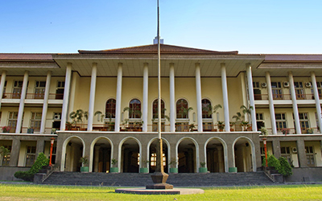
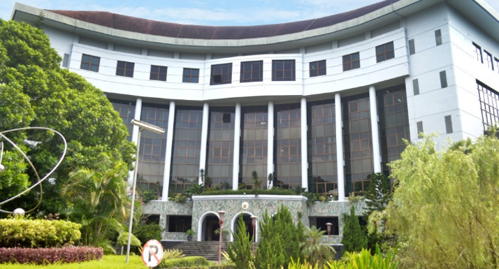

Tur Digital Kampus Universitas Gadjah Mada

Sebuah perjalanan atraktif dalam menjelah dan mengenal fakultas yang berada di Universitas Gadjah Mada
Fakultas Biologi

Fakultas Biologi UGM didirikan pada tanggal 19 September 1955 berdasarkan SK Mentri Pendidikan, Pengajaran, dan Kebudayaan RI no. 53759/Kb, tertanggal 15 September 1955.
Pada masa awal, Fakultas Biologi UGM berada di Kompleks Mangkubumen, Yogyakarta, bersama Fakultas Kedokteran, Kedokteran Gigi, dan Farmasi. Sejak tahun 1970, Fakultas Biologi UGM menempati kampus di Sekip Utara Yogyakarta.
Setelah tahun akademik 1994/1995, Fakultas Biologi hanya menyelenggarakan satu program studi, yaitu Program Studi Biologi, berdasarkan SK Mendikbud no. 056/U/1994 tertanggal 19 Maret 1994 dan SK Mendikbud no. 0219/U/1995 tertanggal 25 Juli 1995.
Fakultas Ekonomika dan Bisnis

Fakultas Ekonomika dan Bisnis (FEB) Universitas Gadjah Mada di Yogyakarta didirikan pada tanggal 19 September Tahun 1955. Pada awalnya, pendidikan dan pengajaran ekonomi di Universitas Gadjah Mada, dilaksanakan oleh Jurusan Ekonomi yang dikoordinasi oleh Bagian Hukum, Fakultas Hukum, Ekonomi, Sosial dan Politik (Fakultas HESP). Dalam perkembangan selanjutnya, mulai tahun akademi 1955/1956, Fakultas HESP dipecah menjadi 3 fakultas yaitu Fakultas Hukum, Fakultas Ekonomi, dan Fakultas Sosial Politik.
Fakultas Ekonomi UGM (sebelum berubah namanya menjadi FEB) merupakan fakultas ekonomi negeri yang ketiga di Indonesia. Perubahan nama Fakultas Ekonomi UGM menjadi Fakultas Ekonomika dan Bisnis UGM adalah untuk memenuhi tujuan go-international, fakultas memandang perlu untuk menggunakan istilah yang berlaku secara internasional yang memudahkan FEB untuk beradaptasi dalam komunitas internasional. Seiring dengan hal tersebut, Fakultas Ekonomika dan Bisnis UGM terus berupaya meningkatkan standar mutu pengajaran dan penelitian dengan ikut menjadi anggota AACSB International—The Association to Advance Collegiate Schools of Business (AACSB). Hingga pada 12 Mei 2014, Fakultas Ekonomika dan Bisnis UGM berhasil meraih akreditasi AACSB International dan menjadi satu-satunya sekolah bisnis di Indonesia yang terakreditasi.
Fakultas Farmasi

Fakultas Farmasi Universitas Gadjah Mada didirikan oleh Kementrian Kesehatan RI pada tanggal 27 September 1946 dengan nama Perguruan Tinggi Ahli Obat (PTAO) yang bertempat di Klaten. Perguruan Tinggi ini bergabung dalam gabungan perguruan tinggi-perguruan tinggi yang terdiri dari Perguruan Tinggi Kedokteran, Perguruan Tinggi Kedokteran Gigi, Perguruan Tinggi Pertanian dan Perguruan Tinggi Kedokteran Hewan. Kondisi negara yang belum stabil dan gejolak perjuangan sempat menjadikan kegiatan pendidikan terhenti. Hingga pada 1 November 1949 PTAO dibuka kembali di Yogyakarta dan bergabung menjadi Universitas Gadjah Mada pada 1949.
Sebagai instansi pendidikan kefarmasian tertua di Indonesia, Fakultas Farmasi berkomitmen penuh untuk mendedikasikan diri pada perkembangan ilmu pengetahuan dan pendidikan di bidang kefarmasian. Saat ini Fakultas Farmasi memiliki 5 Program Studi (Prodi), yaitu Sarjana Ilmu Farmasi, Magister Ilmu Farmasi, Doktor Ilmu Farmasi yang ketiganya mendapat akreditasi A dari BAN-PT, serta Profesi Apoteker dan Magister Farmasi Klinik yang berhasil terakreditasi A dari LAM-PTKes.
Fakultas Filsafat

Fakultas Filsafat Universitas Gadjah Mada didirikan pada tanggal 18 Agustus 1967. Sebelum didirikannya Fakultas Filsafat secara mandiri, di lingkungan Universitas Gadjah Mada telah ada Fakultas Sastra, Paedagogik, dan Filsafat. Gagasan untuk mendirikan Fakultas Filsafat tercetus terutama karena kebutuhan yang semakin mendesak dibidang pembinaan pendidikan pada umumnya, dan ilmu pengetahuan pada khususnya terutama ilmu pengetahuan dasar dan pengetahuan umum (studium generale).
Fakultas Filsafat UGM menyelenggarakan studi untuk program sarjana, pascasarjana, dan doktor yang semuanya memiliki akreditasi A oleh BAN-PT (2015). Pendidikan di fakultas filsafat dibagi menjadi 3 departemen yaitu Filsafat Barat, Filsafat Timur, dan Filsafat Agama. Fakultas Filsafat diharapkan dapat melahirkan para cendekiawan yang berpengetahuan mendasar dan menyeluruh. Disatu pihak mereka benar-benar terlatih untuk berfikir secara kritis, logis, integratif, dan di lain pihak mampu mengintegrasikan serta mengaplikasikan keahlian mereka masing-masing dalam kesatuan hidup, terutama pada masyarakat negara Indonesia yang sedang membangun.
Fakultas Geografi

Pada tahun 1950, Fakultas Geografi UGM awalnya merupakan salah satu jurusan pada Fakultas Sasta, Pedagogik dan Filsafat UGM, yaitu Jurusan Ilmu Bumi. Waktu itu Jurusan Ilmu Bumi berkembang dengan pesat. Peran pakar Ilmu Bumi semakin nyata dalam pembangunan dan semakin luas kiprahnya, hingga akhirnya Fakultas Sastra dan Kebudayaan UGM merelakan Jurusan Ilmu Bumi berubah menjadi Fakultas Geografi UGM pada 1 September 1963.
Pada saat dibuka, fakultas Geografi memiliki dua jurusan (Prodi), yaitu Jurusan Geografi Fisik dan Jurusan Geografi Manusia. Dalam perkembangannya, mulai tahun 2007 Fakultas Geografi UGM menyelenggarakan 3 Prodi pada jenjang sarjana (S1) yakni 1) Prodi Geografi dan Ilmu Lingkungan, 2) Prodi Kartografi dan Penginderaan Jauh, dan 3) Prodi Pembangunan Wilayah.
Saat ini Fakultas Geografi memiliki tiga departemen :
Fakultas Hukum

Fakultas Hukum Universitas Gadjah Mada merupakan fakultas hukum pertama yang didirikan oleh universitas nasional di Indonesia, dalam rangka perjuangan kemerdekaan Indonesia. Dalam perjalanannya, untuk mewujudkan semangat from good to great faculty of law, Fakultas Hukum UGM telah memberikan kontribusi penting dalam perkembangan bangsa dan negara pada umumnya dan perkembangan pendidikan tinggi ilmu hukum di Indonesia pada khususnya. Banyak pendapat dan pemikiran yang lahir, tumbuh, dan kemudian menyebar dari Fakultas Hukum UGM dalam rangka memperkuat sistem hukum Indonesia. Hal ini selaras dengan cita-cita Fakultas Hukum UGM untuk menciptakan Bulaksumur School of Legal Thoughts.
Berbagai prestasi pun telah dicapai oleh Fakultas Hukum UGM, baik dalam skala nasional maupun internasional. Fakultas Hukum UGM merupakan fakultas hukum universitas negeri pertama di Indonesia yang menginisiasi International Undergraduate Program dalam bidang ilmu hukum. Fakultas Hukum UGM mengadakan 1 rogram studi sarjana, 1 International Undergraduate Program (IUP), 6 program magister, dan 1 program doktor.
Fakultas Ilmu Budaya

Fakultas Ilmu Budaya berdiri sejak 3 Maret 1946 dengan nama Faculteit Sastra, Filsafat, dan Keboedajaan. Fakultas ini sempat berganti - ganti nama sampai enam kali, akhirnya pada tanggal 23 Juni 2001 fakultas ini bernama Fakultas Ilmu Budaya.
Dalam perkembangan terakhir Fakultas Ilmu Budaya Universitas Gadjah Mada menyelenggarakan pendidikan Program Sarjana jenjang S1, dan Program Pascasarjana jenjang S2 dan S3. Jenjang S1 terdiri atas 11 Program Studi yaitu Antropologi Budaya, Arkeologi, Ilmu Sejarah, Sastra Arab, Sastra Indonesia, Sastra Inggris, Sastra Jepang, Bahasa Korea, Sastra Nusantara, Sastra Prancis, dan Pariwisata. Mulai tahun 2011, dibuka juga dua kelas internasional dalam jenjang S1, yaitu program studi Sastra Inggris dan Pariwisata. Program Pascasarjana pada jenjang S2 memiliki program studi Antropologi, Arkeologi, Sejarah, Ilmu Sastra, Linguistik, dan Pengkajian Amerika. Pada jenjang S3 ada program studi Ilmu-Ilmu Humaniora dan Pengkajian Amerika. Di samping itu, Fakultas Ilmu Budaya juga menyelenggarakan pengajaran bahasa dan kebudayaan Indonesia untuk orang asing yang dikelola oleh Unit Pelayanan Pengajaran Bahasa dan Budaya Indonesia atau Indonesian Culture and Language Learning Services (INCULS).
Fakultas Ilmu Sosial dan Ilmu Politik

Fakultas Ilmu Sosial dan Ilmu Politik Unviersitas Gadjah Mada(sebelumnya Akademi Ilmu Politik) pada mulanya didirikan untuk mendidik para calon birokrat pemerintahan di bidang dalam negeri, penerangan, dan luar negeri di awal kemerdekaan Indonesia. Pada masa awal berdirinya UGM, studi ilmu sosial dan politik berada dalam satu fakultas dengan ilmu hukum dan ekonomi. Fakultas Ilmu Sosial dan Politik kemudian dibentuk secara terpisah sejak 1955 yang kemudian berubah nama menjadi Fakultas Ilmu Sosial dan Ilmu Politik, disingkat FISIPOL.
Saat ini Fakultas Ilmu Sosial dan Ilmu Politik telah berhasil memperoleh akreditasi Internasional dari ASEAN University Network (AUN) dengan memiliki enam departemen diantaranya:
dengan tiga jenjang program pendidikan yakni Sarjana, Master, dan Doktoral.Fakultas Kedokteran Gigi

Pada tanggal 5 Maret 1948 diresmikan penggabungan Perguruan Tinggi Kedokteran Gigi dengan Perguruan Tinggi Kedokteran yang diberi nama Perguruan Tinggi Kedokteran dan Kedokteran Gigi bertempat di Rumah Sakit Tegalyoso, Klaten. Pada tanggal 19 Desember 1949 perguruan tinggi ini bergabung dengan perguruan tinggi yang sudah ada di Yogyakarta, yaitu Sekolah Tinggi Teknik dan Fakultas Hukum dan Sastra, Filsafat dan Kebudayaan dengan nama UNIVERSITIT NEGERI GADJAH MADA. Pada saat itu Fakultas Kedokteran Gigi masih merupakan gabungan antara Fakultas Kedokteran dan Farmasi dengan nama FAKULTIT KEDOKTERAN, KEDOKTERAN GIGI DAN FARMASI yang bertempat di Mangkubumen, Yogyakarta. Pada 29 Desember tahun 1960 barulah Fakultas Kedokteran Gigi berdiri sebagai fakultas sendiri.
Fakultas Kedokteran Gigi UGM telah mencetak banyak lulusan baik sebagai pendidik, peneliti, maupun tenaga profesional. Saat ini FKG menyelenggarakan Program Sarja, Pascasarjana, Doktoral, profesi, dan berbagai program spesialis.
Fakultas Kedokteran Hewan

Fakultas Kedokteran Hewan Universitas Gadjah Mada (FKH UGM) merupakan salah satu FKH tertua di Indonesia. Keberadaan FKH UGM tidak dapat dilepaskan dari masa perjuangan bangsa Indonesia sejak masa penjajahan Belanda, penjajahan Jepang, dan awal kemerdekaan Republik Indonesia. Sejak berdirinya Perguruan Tinggi Kedokteran Hewan (PTKH) pada 20 September 1946, hingga bergabungnya PTKH menjadi UGM, FKH terus berkembang. Pada tahun 1987 FKH dilengkapi dengan gedung Laboratorium Diagnostik di Klebengan dan tahun 1992 dilengkapi dengan Teaching Farm. Mulai tahun 2003, FKH menempati kampus baru di Jl. Fauna No. 2 Karangmalang dengan fasilitas gedung dan peralatan baru dan tahun 2006 FKH UGM secara resmi memiliki Rumah Sakit Hewan Prof. Soeparwi.
Fakultas Kedokteran Hewan saat ini mengelola 4 program studi yaitu Program S1 Kedokteran Hewan, Profesi Dokter Hewan, S2 dan S3 Sains Veteriner. Fakultas Kedokteran Hewan secara terus-menerus meningkatkan mutu pendidikan melalui pelaksanaan audit mutu akademik internal, pada tahun 2016 semua program studi telah terakreditasi A oleh BAN PT. Program studi S1 dan Profesi telah tersertifikasi oleh ASEAN University Network (AUN) dan mutu akademik juga telah ditingkatkan melalui peningkatan mutu pelayanan akademik dengan sertifikasi ISO 9001:2008.
Fakultas Kedokteran, Kesehatan Masyarakat dan Keperawatan

FKKMK UGM merupakan Fakultas Kedokteran tertua di Indonesia yang berdiri pada tanggal 5 Maret 1946. Pada jaman penjajahan Belanda terdapat dua sekolah kedokteran yaitu Geneeskundige Hoge School (GHS) di Jakarta dan Netherlands Indische Arsten School (NIAS) di Surabaya. Selanjutnya pada masa pendudukan Jepang (1943-1945) GHS berubah nama menjadi Djakarta Ika Daigaku, sedangkan NIAS ditutup dan kebanyakan mahasiswanya pindah ke Djakarta Ika Daigaku. Sesaat setelah Proklamasi Kemerdekaan RI, Djakarta Ika Daigaku diambil alih oleh pemerintah Republik Indonesia dan berubah nama menjadi Perguruan Tinggi Kedokteran di Jakarta. Dikarenakan kondisi di Jakarta tidak stabil, maka dipindahkan di yogyakarta, dan pada 1949 bergabung dengan sekolah tinggi yang ada di Yogyakarta menjadi Universitas Gadjah Mada.
FKKMK UGM memiliki visi dan misi yang tidak bisa dipisahkan dengan visi dan misi Universitas Gadjah Mada, yaitu menjadi Fakultas Kedokteran berkelas dunia, inovatif dan unggul mengabdi kepada kepentingan bangsa dan kemanusiaan. FKKMK UGM sebagai institusi pembelajaran berbasis riset, yang memiliki reputasi internasional di bidang pendidikan, riset dasar, klinik maupun translasional dan pengabdian masyarakat yang berkesinambungan. FKKMK UGM sebagai rujukan bagi institusi pendidikan kedokteran lainnya dalam pengelolaan kurikulum, organisasi pendidikan, dan proses pembelajaran. Inovasi dan upaya perbaikan di bidang kurikulum dan pembelajaran agar setiap lulusan mampu memenuhi Standar Kompetensi Dokter Indonesia (SKDI), serta mampu bersaing di tingkat global dalam menyelesaikan berbagai permasalahan kesehatan.
Fakultas Kehutanan

Pada tahun ajaran 1951/52 dalam Rapat Senat Terbuka UGM yang dipimpin oleh Presiden UGM, Prof.Dr. Sardjito, dibuka dan dideklarasikan secara resmi Bagian Kehutanan pada Fakultas Pertanian UGM dan sejak itu nama Fakultas Pertanian berubah menjadi Fakultas Pertanian dan Kehutanan UGM. Dalam perkembangan selanjutnya, mulai tanggal 17 Agustus 1963 Fakultas Pertanian dan Kehutanan UGM terpisah menjadi tiga fakultas, yaitu Fakultas Pertanian, Fakultas Teknologi Pertanian dan Fakultas Kehutanan.
Fakultas Kehutanan UGM mempunyai satu Program Studi Strata-1 yaitu Program Studi Kehutanan, dan mempunyai empat Departemen yaitu : Manajemen Hutan, Silvikultur, Teknologi Hasil Hutan, dan Konservasi Sumberdaya Hutan.
Fakultas Matematika dan Ilmu Pengetahuan Alam

Fakultas yang mengasuh Matematika dan Ilmu Pengetahuan Alam di Universitas Gadjah Mada diresmikan berdirinya pada tanggal 19 September 1955. Pada awalnya fakultas ini masih merupakan fakultas gabungan dengan Fakultas Teknik yang disebut Persatuan Fakultas Ilmu Pasti dan Alam dan Fakultas Teknik. Mulai 1 September 1956 Fakultas Ilmu Pasti dan Alam (FIPA) memisahkan diri dari Fakultas Teknik. Mulai tanggal 28 Desember 1982, nama FIPA diubah menjadi FMIPA (Fakultas Matematika dan Ilmu Pengetahuan Alam) dan sampai saat itu memiliki 3 Jurusan yaitu :
Sejak tahun 1985, fakultas menyelenggarakan tiga macam program studi yang sesuai jurusan masing masing, yaitu Program Studi Fisika, Kimia dan Matematika. Semenjak tahun kuliah 1987/1988, Jurusan Matematika membuka dua program studi baru yaitu Program Studi Statistika dan Program Studi Ilmu Komputer, begitu pula Jurusan Fisika membuka dua program studi baru yaitu Program Studi Geofisika dan Program Studi Elektronika dan Instrumentasi. Pada tahun 2010, proposal pembentukan Jurusan Ilmu Komputer dan Elektronika (JIKE). JIKE menaungi dua program studi yaitu Program Studi Elektronika dan Instrumentasi, yang berpindah dari Jurusan Fisika, serta Program Studi Ilmu Komputer, yang berpindah dari Jurusan Matematika. Dibuka juga program magister dan doktor untuk ilmu matematika, ilmu fisika, ilmu kimia, dan ilmu komputer.
Fakultas Pertanian

Fakultas Pertanian UGM telah banyak memberikan sumbangsih kepada bangsa dan dunia ilmu pengetahuan dalam bentuk sumberdaya manusia terdidik dan pengembangan ilmu, teknologi, serta konsep-konsep pembangunan. Karya-karya yang telah dihasilkan antara lain: UUPA ( Undang-Undang Pokok Agraria), padi Gogo Gama 61 dan Gama 87, Konservasi candi Borobudur, Test Farm Lahan Pasang Surut, Badan Usaha Unit Desa/Koperasi Unit Desa (BUUD/KUD), Pengendalian Hama Terpadu (PHT), Legin (Leguminosa Inokulum), Perkebunan Inti Rakyat (PIR) terutama Komoditas Teh dan Kakao. Kedelai Hitam Lokal Unggul Mallika (bersama-sama dengan tim dari Fak. Teknologi Pertanian), Produksi Vanili tahan penganggu tanaman, serta pengembangan budidaya tanaman di lahan pasir pantai. Di bidang perikanan telah berhasil diproduksi Vaksin Vibrio untuk mencegah penyakit vibriosis pada ikan laut.
Pendidikan di Fakultas Pertanian UGM dibagi menjadi 6 Departemen :
Fakultas Peternakan

Fakultas Peternakan adalah fakultas yang termuda di Universitas Gadjah Mada (UGM). Pada tanggal 15 September 1955 Fakultas Kedokteran Hewan UGM berkembang menjadi Fakultas Kedokteran Hewan dan Peternakan (FKH&P) UGM dan selanjutnya atas dorongan masyarakat dan inisiatif beberapa dosen pada tahun 1964 membentuk dua jurusan yaitu: 1) Jurusan Kedokteran Hewan dan 2) Jurusan Peternakan. Mulai tanggal 1 September 1966 FKH & P ditingkatkan menjadi dua Fakultas yaitu: 1) Fakultas Kedokteran Hewan dan 2) Fakultas Peternakan.
Pada awal pembentukan Fakultas Peternakan memiliki 4 program studi, yaitu : Nutrisi dan Makanan Ternak, Produksi Ternak, Sosial Ekonomi Peternakan, dan Teknologi Hasil Ternak. Mulai 2006, semua program studi tersebut dirubah menjadi Program Studi Ilmu dan Industri Peternakan.
Fakultas Psikologi

Cikal bakal Fakultas Psikologi UGM adalah Jurusan Psikologi pada Fakultas Ilmu Pendidikan Universitas Gadjah Mada, yang berdiri pada tahun ajaran 1958/1959. Pada tanggal 6 Mei 1964 Fakultas Ilmu Pendidikan UGM digabungkan dengan IKIP Yogyakarta. Namun jurusan Psikologi di FIP UGM dipisah dan tetap tinggal di UGM, menjadi Bagian Psikologi.
Pada tanggal 8 Januari 1965, berdasarkan Surat Keputusan Presiden RI menetapkan bahwa Bagian Psikologi UGM resmi sebagai Fakultas Psikologi Universitas Gadjah Mada. Hingga sekarang Fakultas Psikologi Universitas Gadjah Mada diakui sebagai salah satu program psikologi terkemuka di Indonesia.
Fakultas Teknik

Fakultas Teknik Universitas Gadjah Mada lahir dalam kancah revolusi. Kondisi negeri yang penuh gejolak menyertai sejarah pembentukan Fakultas Teknik UGM. Pada tanggal 19 Desember 1949 setelah kedaulatan kembali ke tangan Republik Indonesia, STT Jogjakarta digabung dengan Sekolah Tinggi Kedokteran, dan Balai Perguruan Tinggi Gadjah Mada menjadi Universiteit Negeri Gadjah Mada. STT Jogjakarta kemudian berstatus sebagai Fakulteit Teknik.
Menghadapi industri 4.0 FT UGM terus meningkatkan mutu pendidikannya baik melalui pembaruan kurikulum, pembelajaran, maupun pengembangan mahasiswa secara holistik. Hingga tahun 2017 sebanyak 9 prodi S1 telah disertifikasi oleh ASEAN University Network – Quality Assurance (AUN QA). Program Studi S1 Teknik Kimia telah terakreditasi tingkat internasional dari The Institution of Chemical Engineers (IChemE). Tiga prodi yaitu Teknik Geodesi, Teknik Mesin dan Teknik Sipil telah divisit oleh Accreditation Board of Engineering and Technology (ABET). Sebanyak 5 prodi telah memasukkan aplikasi untuk proses akreditasi internasional yaitu Teknik Elektro, Teknologi Informasi dan Teknik Industri ke ABET, sedangkan Arsitektur mengajukan ke Korea Architectural Accreditng Board (KAAB) dan Perencanaan Wilayah dan Kota mengajukan ke Royal Town Planning Institute (RTPI). Secara nasional, semua prodi S1 di FT UGM telah diakreditasi oleh BAN PT dengan nilai A. Sedangkan pada jenjang S2, sebanyak 12 prodi telah terakreditasi A, 2 prodi masih terakreditasi B karena masih baru dan belum meluluskan. Pada jenjang S3, sebanyak 7 prodi terakreditasi A, serta 1 prodi terakreditasi B.
Pendidikan di Fakultas Teknik UGM dibagi menjadi 8 Departemen :
Fakultas Teknologi Pertanian

Fakultas Teknologi Pertanian UGM sebelumnya merupakan salah satu Bagian (Jurusan) di Fakultas Pertanian UGM. Dalam perkembangan selanjutnya, dirasakan perlu adanya penerapan teknologi yang lebih luas dan mendalam agar sektor pertanian lebih berperan dalam pembangunan bangsa dan negara, maka Jurusan Teknologi Pertanian berkembang menjadi Fakultas Teknologi Pertanian dan diresmikan pada tanggal 19 September 1963.
Fakultas Teknologi Pertanian UGM menitikberatkan pada kajian pengembangan dan penerapan teknologi untuk bidang pertanian dengan melibatkan ilmu-ilmu kimia, biologi, mikrobiologi, matematika, fisika, manajemen dan keteknikan dalam sistem konservasi tanah dan tata air, rancangbangun peralatan pertanian, teknologi pangan dan hasil pertanian, teknologi pengawetan, pengembangan produk baru bernilai ekonomi tinggi, optimasi proses, analisa sistem dan manajemen di dalam sistem industri pertanian, serta agroindustri.
Implementasi dari kajian-kajian tersebut diselenggarakan oleh departemen yang ada, yaitu :
Sekolah Pascasarjana
Pendidikan Pascasarjana di UGM khususnya untuk program doktor telah dikembangkan sejak tahun 1950. Sedangkan untuk program magister dikembangkan mulai tahun 1980 setelah pemerintah menetapkan stratafikasi jenjang perguruan tinggi yang meliputi jenjang S1, S2, dan S3.
Sekolah Pascasarjana Universitas Gadjah Mada memiliki berbagai bidang studi Multidisiplin. Daftar Program studi berserta Minat studi (Konsentrasi) dari masing-masing Program studi dapat dilihat pada web pascasarjana UGM.
Sekolah Vokasi

Sekolah Vokasi UGM didirikan sebagai institusi untuk mengembangkan diri sebagai lembaga nasional yang bercirikan pada aplikasi ilmu dan pengetahuan. Sekolah Vokasi UGM dibentuk dengan Peraturan Rektor UGM No. 518/P/SK/HT /2008 tertanggal 6 Oktober 2008.
Sekolah Vokasi pada awalnya di tahun 2009 mempunyai 22 program studi (prodi) Diploma 3 dan menjadi 23 prodi (mulai tahun ajaran 2011) dengan dibukanya kembali Program Studi Diploma 4 Bidan Pendidik. Pada tahun 2012, dibuka program studi baru yaitu Program Studi Diploma 3 Metrologi dan lnstrumentasi. Kemudian pada tahun 2013, dibuka tiga program studi D4 baru sehingga total prodi ada 27.
Pendidikan di Sekolah Vokasi UGM dibagi menjadi 8 Departemen :